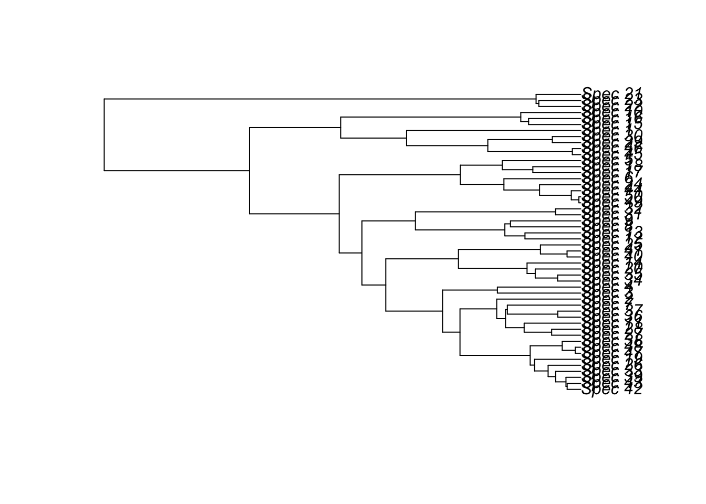
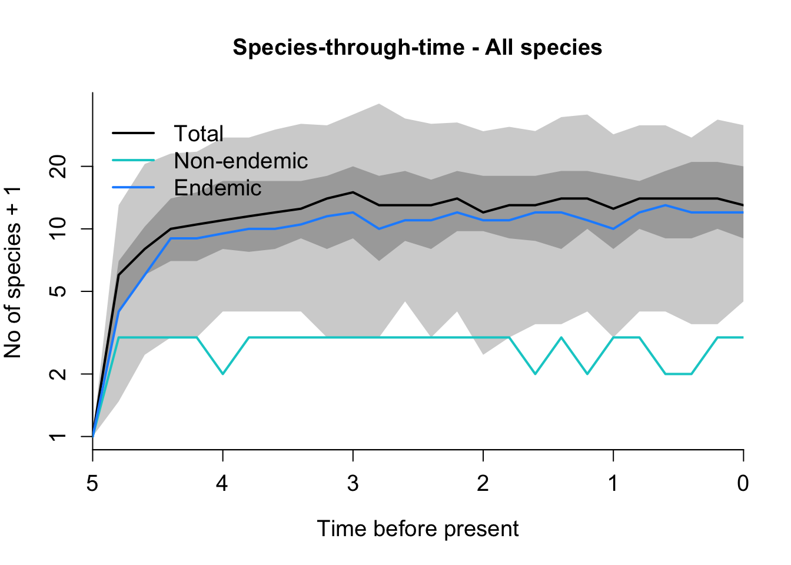

rm(list = ls())
library(ape)
library(DAISIEprep)
library(DAISIE)8 Answers
8.1 Example of how to extract data for Jamaica species from the Insula tree, add missing species, fit DAISIE models and run simulations.
8.1.1 Load required packages
8.1.2 Load tree
Insula_tree <- read.nexus("data/Insula.tre")Visualise tree (easier to use Figtree!)
plot(Insula_tree)
8.2 Prepare data using DAISIEprep
Look in the checklist to see which species occur on Jamaica. Specify tips corresponding to Jamaica species by specifying that they are endemic and/or non-endemic to the island:
island_species <- data.frame(
tip_labels = c("Spec_29",
"Spec_48",
"Spec_47",
"Spec_38",
"Spec_43",
"Spec_42",
"Spec_39",
"Spec_33",
"Spec_26",
"Spec_19",
"Spec_41",
"Spec_40",
"Spec_25",
"Spec_9",
"Spec_24")
,
tip_endemicity_status = c(rep("endemic",14),"nonendemic"))Assign island endemicity status to all species in the dataset (including the non-Jamaican species)
endemicity_status <- create_endemicity_status(
phylo = Insula_tree,
island_species = island_species
)Add endemicity status to the phylogeny
phylod <- phylobase::phylo4d(Insula_tree, endemicity_status)Visualize this on the tree
plot_phylod(phylod = phylod)Extract data from the phylogeny using the min algorithm
island_tbl_min <- extract_island_species(
phylod = phylod,
extraction_method = "min"
)
island_tbl_minClass: Island_tbl
clade_name status missing_species col_time col_max_age branching_times
1 Spec_9 endemic 0 0.2892541 FALSE NA
2 Spec_19 endemic 0 0.4972437 FALSE 0.207998....
3 Spec_24 nonendemic 0 0.1694692 FALSE NA
4 Spec_25 endemic 0 0.5035954 FALSE 0.165789....
5 Spec_29 endemic 0 0.1166231 FALSE NA
min_age species clade_type
1 NA Spec_9 1
2 NA Spec_19,.... 1
3 NA Spec_24 1
4 NA Spec_25,.... 1
5 NA Spec_29 1Extract data from the phylogeny using the ancestral state algorithm
phylod <- add_asr_node_states(phylod = phylod, asr_method = "mk")
plot_phylod(phylod = phylod)island_tbl_asr <- extract_island_species(
phylod = phylod,
extraction_method = "asr"
)
island_tbl_asrClass: Island_tbl
clade_name status missing_species col_time col_max_age branching_times
1 Spec_9 endemic 0 0.2892541 FALSE NA
2 Spec_19 endemic 0 0.4972437 FALSE 0.207998....
3 Spec_24 nonendemic 0 0.1694692 FALSE NA
4 Spec_25 endemic 0 0.5035954 FALSE 0.165789....
5 Spec_29 endemic 0 0.1166231 FALSE NA
min_age species clade_type
1 NA Spec_9 1
2 NA Spec_19,.... 1
3 NA Spec_24 1
4 NA Spec_25,.... 1
5 NA Spec_29 1Compare 2 options:
all.equal(island_tbl_min,island_tbl_asr)[1] TRUEAs you can see, the results of the 2 extractions (min and asr) are exactly the same in this case, so we can use either for the subsequent analyses.
8.2.1 Add missing species
Add missing species “Spec_51”, which is not closely related to any species
island_tbl <- island_tbl_min
island_tbl <- add_island_colonist(
island_tbl = island_tbl,
clade_name = "Spec_51",
status = "endemic",
missing_species = 0,
col_time = NA_real_,
col_max_age = FALSE,
branching_times = NA_real_,
min_age = NA_real_,
clade_type = 1,
species = "Spec_51"
)An alternative is to set the colonisation time to be younger than the mainland clade it is related to, by setting col_time to the age you choose and setting col_max_age=TRUE to tell DAISIE that is a maximum age for colonisation.
Add missing species Spec_52, closely related to Spec_42
island_tbl <- add_missing_species(
island_tbl = island_tbl,
num_missing_species = 1,
species_to_add_to = "Spec_42"
)Create DAISIE datalist
insula_data_list <- create_daisie_data(
data = island_tbl,
island_age = 5,
num_mainland_species = 1000,
precise_col_time = TRUE
)8.3 Fit DAISIE models to data
Fit model with 5 parameters
M1 <- DAISIE_ML(
datalist = insula_data_list,
initparsopt = c(1.5,1.1,20,0.009,1.1),
ddmodel = 11,
idparsopt = 1:5,
parsfix = NULL,
idparsfix = NULL
)
M1 lambda_c mu K gamma lambda_a loglik df conv
1 5.859948 7.770723 3707849 0.02505749 3.234032 -37.10764 5 0Fit model with no carrying capacity
M2 <- DAISIE_ML(
datalist = insula_data_list,
initparsopt = c(1.5,1.1,0.009,1.1),
idparsopt = c(1,2,4,5),
parsfix = Inf,
idparsfix = 3,
ddmodel=0
)
M2 lambda_c mu K gamma lambda_a loglik df conv
1 5.901964 7.820509 Inf 0.02522255 3.198683 -37.10743 4 0Fit model with no anagenesis (optional)
M3 <- DAISIE_ML(
datalist = insula_data_list,
initparsopt = c(1.5,1.1,0.009),
idparsopt = c(1,2,4),
parsfix = c(Inf,0),
idparsfix = c(3,5),
ddmodel=0
)
M3 lambda_c mu K gamma lambda_a loglik df conv
1 6.740009 8.743373 Inf 0.02747074 0 -37.30009 3 0Save model results in a table
model_results <- rbind(M1,M2,M3)
model_results lambda_c mu K gamma lambda_a loglik df conv
1 5.859948 7.770723 3707849 0.02505749 3.234032 -37.10764 5 0
2 5.901964 7.820509 Inf 0.02522255 3.198683 -37.10743 4 0
3 6.740009 8.743373 Inf 0.02747074 0.000000 -37.30009 3 0Create AIC function for model comparison
AIC_compare <- function(LogLik,k){
aic <- (2 * k) - (2 * LogLik)
return(aic)
}Compute AIC for all the models
AICs <- AIC_compare(c(M1$loglik,M2$loglik,M3$loglik),c(M1$df,M2$df,M3$df))
names(AICs) <- c('M1','M2','M3')
AICs M1 M2 M3
84.21527 82.21486 80.60018 In this case, the preferred model is M3.
8.4 Simulate islands based on parameters from preferred model
Run simulations
Insula_sims <- DAISIE_sim(
time = 4,
M = 1000,
pars = as.numeric(M3[1:5]),
replicates = 100,
verbose = 1,
plot_sims = FALSE)Plot simulations
DAISIE_plot_sims(Insula_sims)
It looks like Insula diversity in the island of Jamaica is at a dynamic equilibrium.